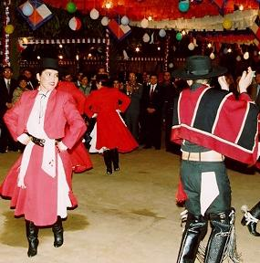

Esta es la zona del huaso. Sus valles templados y fácilmente adaptables a la ganadería hicieron que los españoles los tomaran como principal lugar
de colonización y pudieran adaptar sus costumbres sin fuertes cambios inmediatos.
La Mazamorra
Su nombre deriva posiblemente del paso mazamorreado que suele caracterizar esta danza, cuya simple coreografía nos sitúa el pensamiento de dos gavilanes que rodean una paloma.

El Pequén
Este simpático baile folclórico chileno de raíz netamente popular, se baila de distintas maneras, según su región de origen; y es así como se conocen dos versiones: El Pequén Gañan, originario de Chiloé, y el Pequén Campesino, bailado en la zona central. Ambos guardan mucho parecido en algunos de sus pasos y figuras, como asimismo en la actitud de los bailarines por lo cual sólo explicaremos el Pequén Campesino, basándonos en la versión de Ismael Navarrete, recogida por Margot Loyola en Cauquenes.
Volver al Menu